Objective
Develop a computationally efficient RANS simulation that captures both qualitatively and quantitatively the flow structures and Cl/Cd of the published benchmark, providing a validated baseline for further external aerodynamic studies.
Methodology
Simulation
The turbulence model compared was k-Omega SST. The flow structure was compared against 5 PIV planes and the total pressure coefficient isosurface (Cpt=0). The table below contains the boundary conditions used for the simulation.
| Parameter | Value |
|---|---|
| Freestream velocity | 25 m/s |
| Air density | 1.20845 kg/m³ |
| Turbulence model | k-Omega SST |
| Solver | RANS |
| Number of cells | 30 million |
Mesh strategy
Refinement groups with values expressed as % of base size (12 mm):
| Component | Category | Details | Min size (%) | Target size (%) |
|---|---|---|---|---|
| IFW | Group 1 | Front wing, strut | 4 | 20 |
| Group 2 | Nose | 8 | 40 | |
| Wake | Volumetric refinements | 400 mm offset + bounded shape | – | 150 |
| 200 mm offset + bounded shape | – | 100 | ||
| 100 mm offset + bounded shape | – | 30 | ||
| Ground (Z axis anisotropic) | – | 600 |
Prism layer settings:
| Details | Layers | First layer (mm) | Total thickness (mm) |
|---|---|---|---|
| Front wing, strut | 18 | 0.005 | 4.8 |
| Nose | 5 | 1.5 | 10 |
| Ground | 5 | 1 | 10 |
| Walls, inlet, outlet | 0 | 0 | 0 |
The front wing was run with a low y+ approach to resolve the viscous sublayer, allowing more accurate modelling of near-wall gradients and accurately resolving the interaction between the wing elements. This was considered important since the near-wall flow strongly affects drag and downforce predictions.
Mesh
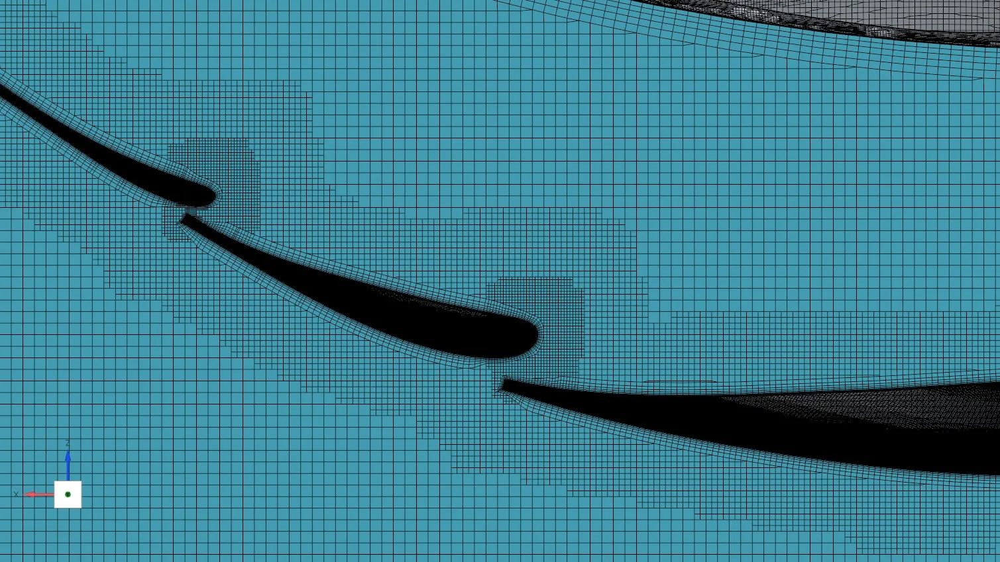
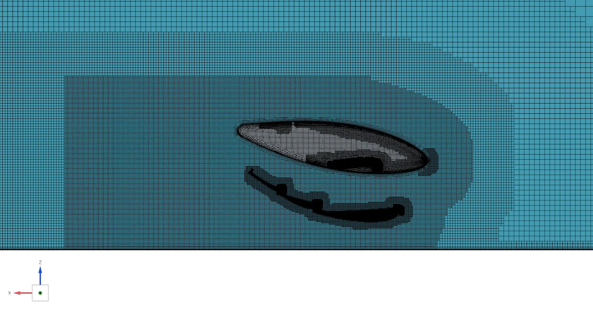
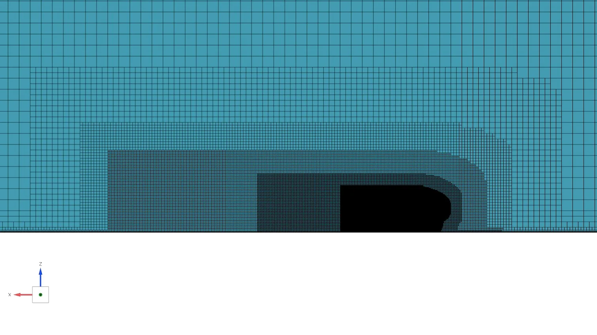
Results
Cl and Cd monitors converged after 3000 iterations. A further 500 iterations were run and averaged to extract Cl and Cd.
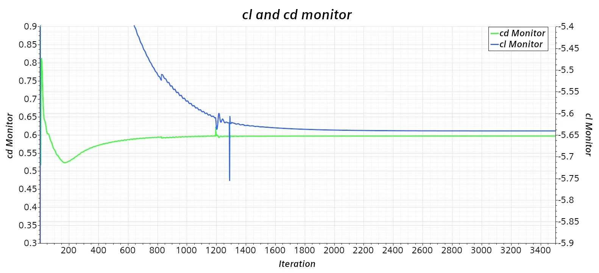
y+ distribution:
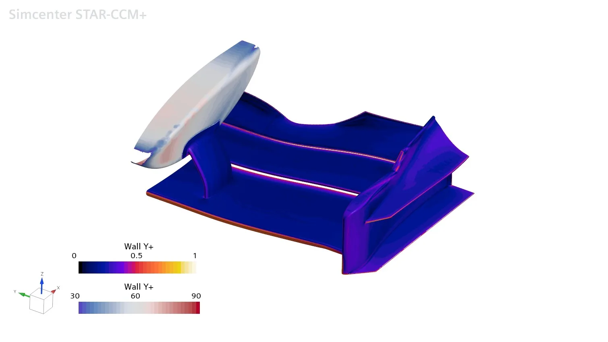
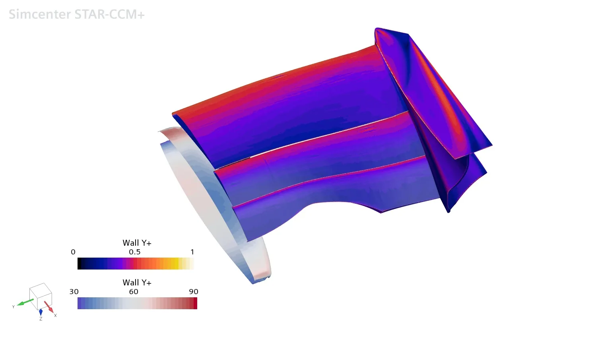
Downstream flow validation (PIV planes)
Comparison between the 5 PIV planes from literature (PBS) and CFD.
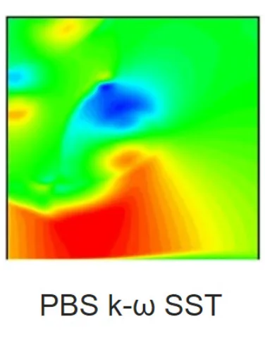
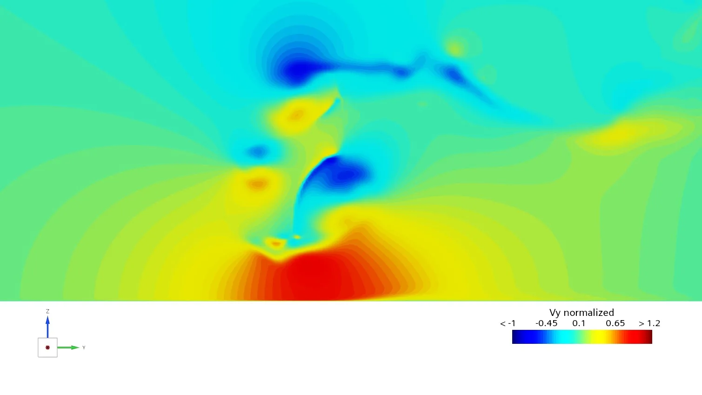
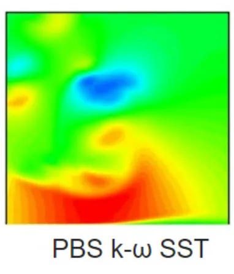
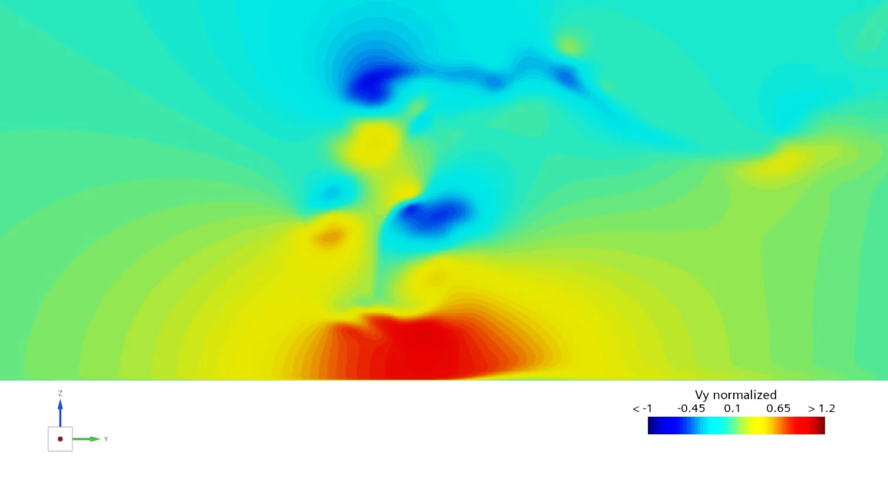
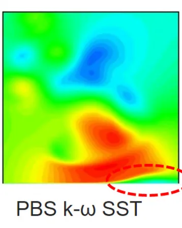
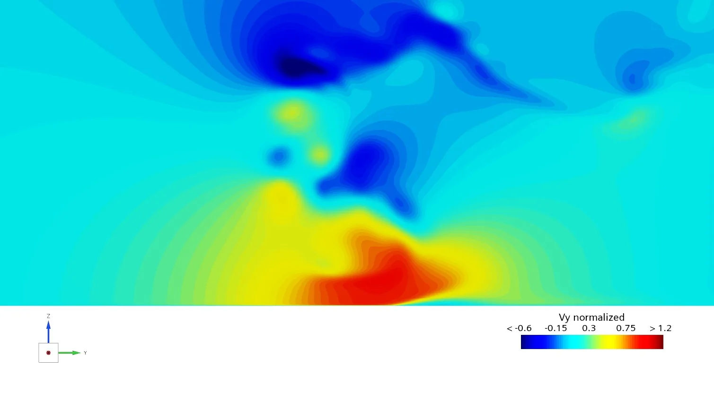
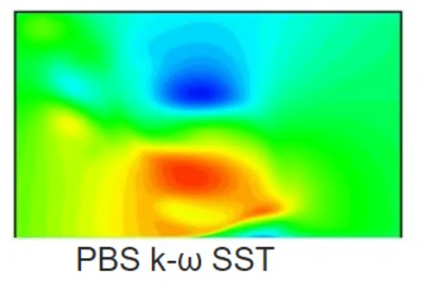
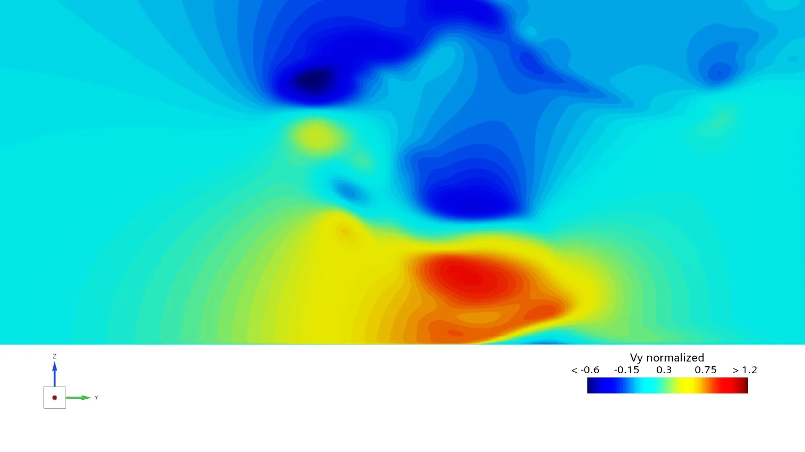
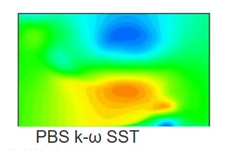
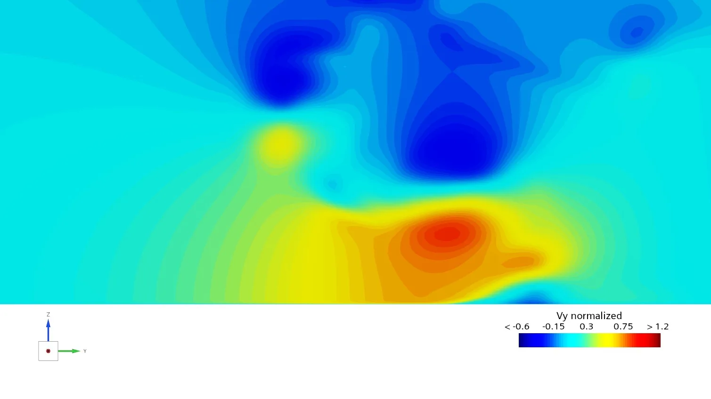
The scale was kept the same. A slightly different colour bar was used due to the lack of information in the analysed paper.
Vortex isosurface validation (Cpt=0)
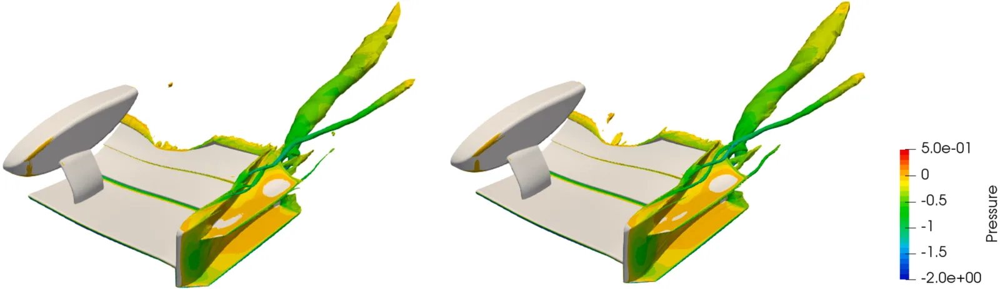
The major vortex structures were captured well by the 30 million cell model. However, further refinement would be needed to match the accuracy of the literature PIV planes and Cpt=0, which were obtained with a finer mesh (120 million cells).
Cl and Cd comparison
The reference surface area used was 0.175 m² (c = 0.25, W(s) = 0.7).
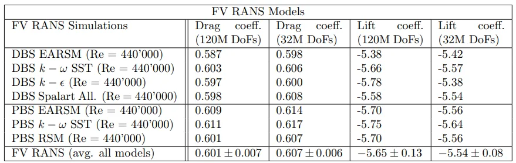
| Cl | Cl difference | Cd | Cd difference |
|---|---|---|---|
| −5.6406 | 0.011% | 0.597 | 3.25% |
The lift and drag coefficients with the 30 million cell mesh were −5.6406 and 0.597. Relative to the reference values, they differ by 0.0006 (0.011%) and 3.25% respectively, showing strong agreement in lift and a slight offset in drag. Given the similar mesh count, y+, refinement sizes and boundary conditions, the drag difference suggests a greater sensitivity of Cd to numerical and modelling assumptions compared to Cl.
Engineering outcome
The developed 30 million cell mesh captured the major vortex structures and Cl/Cd in good agreement with the benchmark. Cl and Cd errors of 0.011% and 3.25% respectively were achieved, while reduced accuracy was observed for the PIV planes and the Cpt=0 isosurface. The model will therefore be used as an efficient baseline for further external aerodynamics studies.
What was achieved
- 0.011% Cl difference
- 3.25% Cd difference
- Major vortex structures captured across the 5 PIV planes and Cpt=0
References
Buscariolo, F. F., et al. (2022). Spectral/hp element simulation of flow past a Formula One front wing: Validation against experiments. Journal of Wind Engineering and Industrial Aerodynamics, 221, 104832. https://doi.org/10.1016/j.jweia.2021.104832
O’Sullivan, A. S., Puri, K., & Ferrer, E. (2023). From RANS to LES: Comparison of simulation methodologies for the Imperial Front Wing. AIAA AVIATION Forum 2023. https://doi.org/10.2514/6.2023-3865